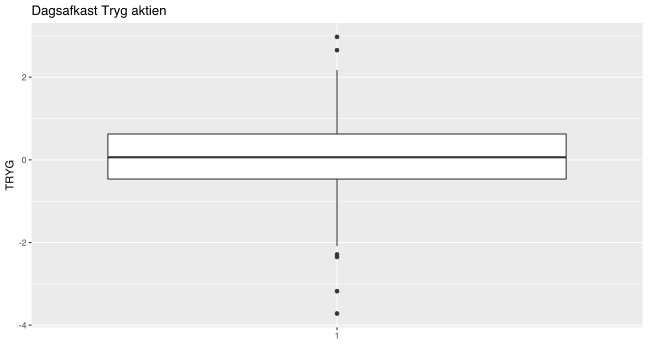

Kapitel 4 Medianen, kvartiler og fraktilen
Når vi ønsker at beskrive middeltendensen i et datasæt kan vi angive middelværdien, typetallet eller medianen.
Medianen også kaldet 2. kvartil eller 50% fraktilen er den midterste observation i det ordnede datasæt, er der et lige antal observationer tages gennemsnittet. Man kan nu bestemme nedre kvartil også kaldet 1. kvartil eller 25% fraktilen, som midten af den nedre halvdel af det ordnede datasæt. Tilsvarende gælder for øvre kvartil også kaldet 3. kvartil eller 75% fraktilen blot for den øvre halvdel at det ordnede datasæt.
Hvis vi har et ordnet datasæt {11,13,15,16,16,18,20}, finder vi således medianen som den midterste observation, da vi har et ulige antal observationer. {11,13,15,16,16,18,20}. Vi kan udtrykke dette som at 50% af observationerne er 16 eller derover, eller ævkvivalent, at 50% af observationerne er mindre end 16.
Vi kan bestemme 1. kvartil, som den midterste observation, i den nedre del at datasættet {11,13,15,16}. Vi har to midterste observationer {11,13,15,16}, i den nedre del af datasættet og bestemmer 0.25 fraktilen som gennemsnittet af disse: \(\frac{13+15}{2}=14\). Vi kan udtrykke dette som at 75% af observationerne er 14 eller derover, eller at 25% af observationerne er mindre en 14.
“Most murders are committed by someone who is known to the victim. In fact, you are most likely to be murdered by a member of your own family on Christmas day.”
- Mark Haddon
Der er mere end 8 forskellige definitioner på kvartiler og fraktiler alt efter kontinent og region, vi går ikke i deltaljer med beregnings metoderne, men softwareprogrammer kan beregne fraktiler for os, disse kan altså afvige en smule alt efter beregningsmetoden. 1. og 2. kvartil er fx. ikke helt de samme når vi regner disse ud i excel.
Data for DK aktiekurser.xlsx hentes her, vi ønsker at beskrive det procentvise daglige afkast for Tryg vha. forskellige deskriptorer.
Medianen for Tryg findes ved at sortere data -4.3215, -3.7187, -3.1777,…,3.7356 vi finder at medianen bliver 0.073.
Vi bestemmer ligeledes 1. kvartil til -0.41305, og 2. kvartil til 0.612125. 1. kvartil, Medianen og 3. kvartil kan ses i nedenstående boxplot diagram, som hhv. første, anden og tredie vandrette streg i boxplottet for Tryg. Vi kan hvis vi skal forsøge at udtrykke fx. 1. kvartil med menneskeord sige at 25% af dagene var der et afkast på -0.41305 eller derunder. Man kunne også udtrykke det som at 75% af dagene var afkastet på mere end-0.41305.
Kvartilafstanden eller IQR interquantile range betyder 3. kvartil minus 1. kvartil, i Tryg eksemplet bliver kvartilafstanden 0.612125- -0.41305= 1.025175. Dette svarer præcis til højden på boksen i boxplottet for Tryg, vi kan altså konstatere at halvdelen af afkastene lå i et spænd på 1.025175 procent.

4.0.1 Fraktiler
Vi kan ligeledes bestemme alle mulige andre fraktiler end 25% 50% og 75% fraktilerne, software angiver ofte en række af disse så man hurtigt kan danne sig et billede af datasættet. Nedenfor er en del fraktiler for Tryg datasættet angivet, mange af disse kan direkte aflæses i boxplottet.
10% fraktilen, 20% fraktilen,…,90% fraktilen kaldes også for deciler.
Herunder ses fraktiler for dagligt afkast på Tryg aktien.